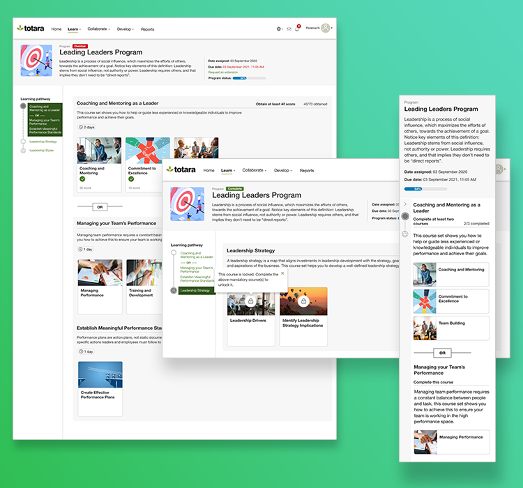
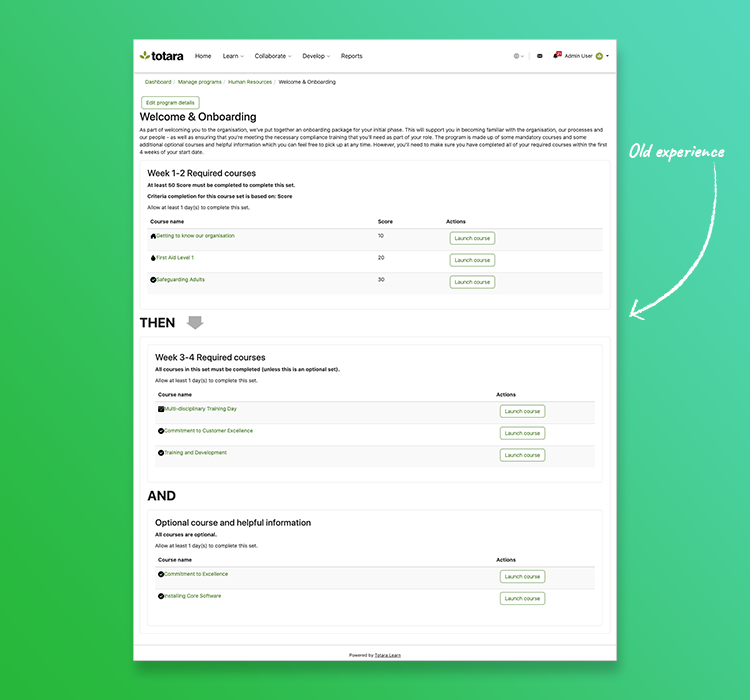
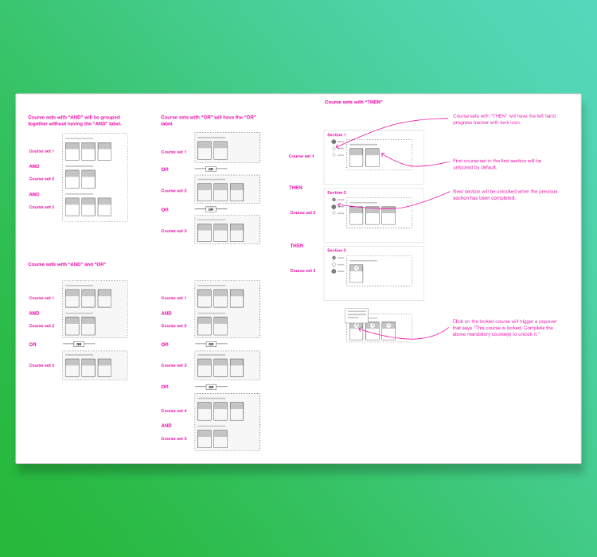
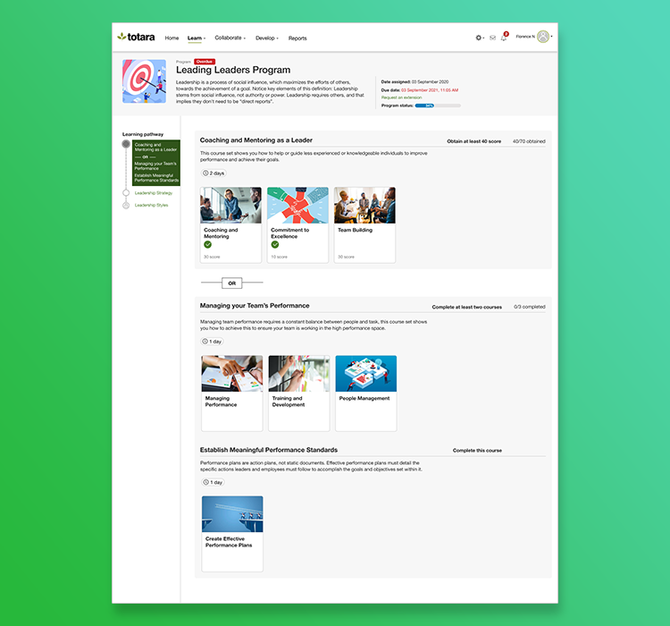
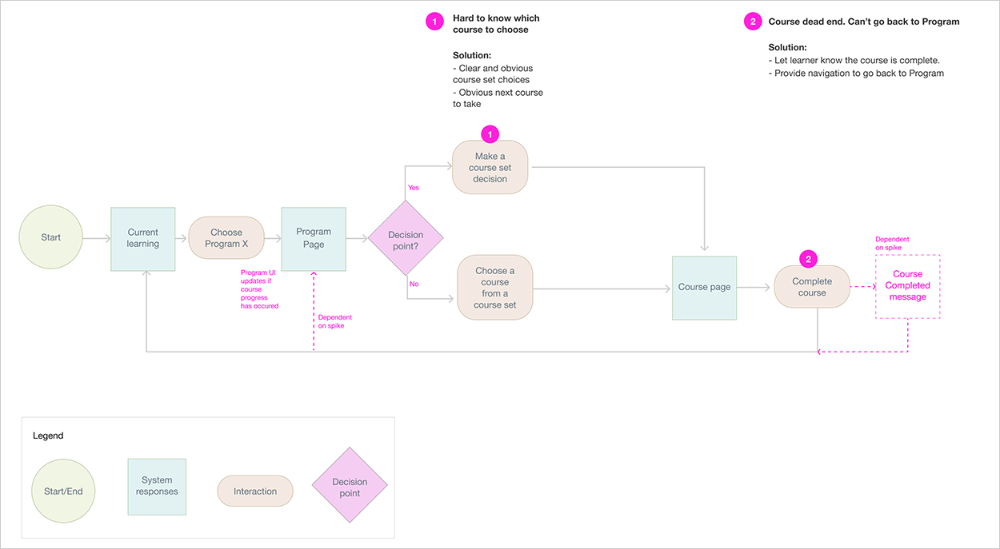
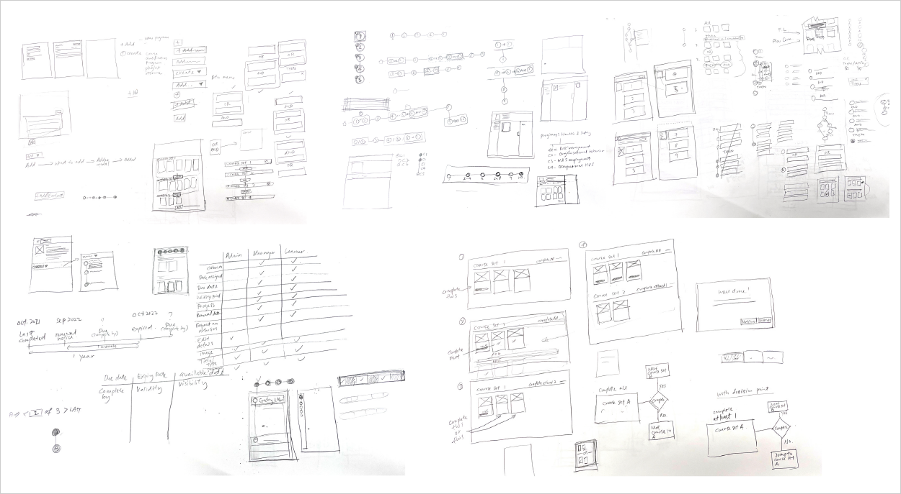
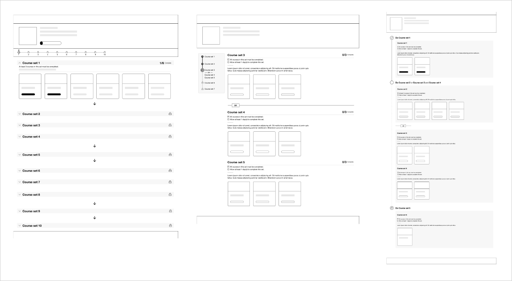
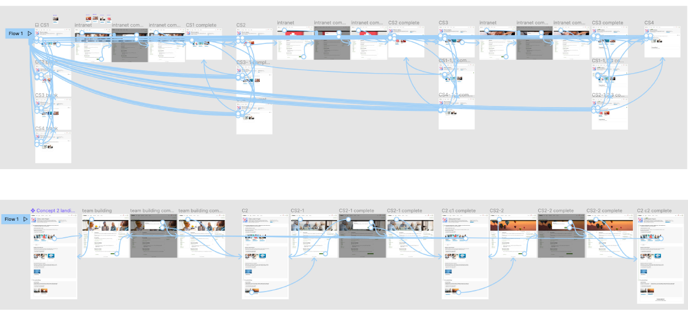
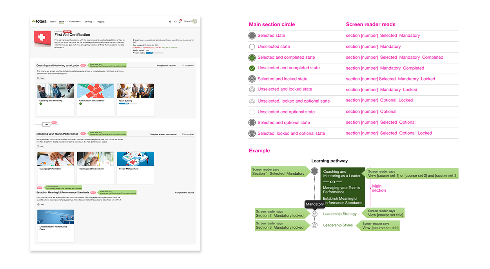

The current Totara business objectives aim to cross-sell the new products (Totara Engage and Perform) to existing Totara Learn customers. By design, these products are experienced together, amplifying the need to bring Totara Learn to a similar standard particularly in high traffic areas.
Programmes and Certifications are one of the key areas that are most complained about the UI/UX and organisations are reluctant to use them because of this.
In the context of Totara, a Programme is to be completed once only and a Certification usually prompts users to re-complete it upon expiry. A Certification is normally used for compliance related topics.

Main areas of responsibility:

Programs and Certifications were initially designed by developers without any UI/UX expertise, leading to a confusing and challenging user interface. In taking on the design responsibilities, I explored how Programs and Certifications worked.
My goal was to identify all potential scenarios administrators could configure for learners. I took a holistic approach to ensure my design addressed the complexity and diversity of use cases, resolving previous issues and enhancing the overall user experience.

I analysed the existing interface structure and conducted in-depth research to understand the typical needs of the end user. Using insights from this research, along with user pain points and requirements, I crafted several high-level designs. Feedback on these designs was collected from the Product Manager and Tech Lead to ensure alignment with project goals and technical feasibility.
Through several design tweaks and refinements, I developed two interactive prototypes. These prototypes were then rolled out to our users and partners for usability testing and validation.
We also recruited participants at a local café to interact with our high-fidelity prototypes and provide valuable feedback.

This substantial enhancement received enthusiastic responses from our partners, as it is modern, user-friendly, and would save at least 8 hours in the customisation process.
I have learned that incorporating user feedback requires a balanced consideration of business requirements, user needs, and technical feasibility. Prioritising essential aspects is key, as it's not possible to address every suggestion.
Understand the user flow and identify the pain points.

Exploring different concepts for the navigation, course sets grouping and metadata for different users.

Explored and presented different ideas to the stakeholders for feedback. These are just some of the ideas after a few design iterations.

Created two different concepts for usability testing.

Created the detailed design spec for the developer, this includes different users’ view and accessibility labels. View full design spec.
